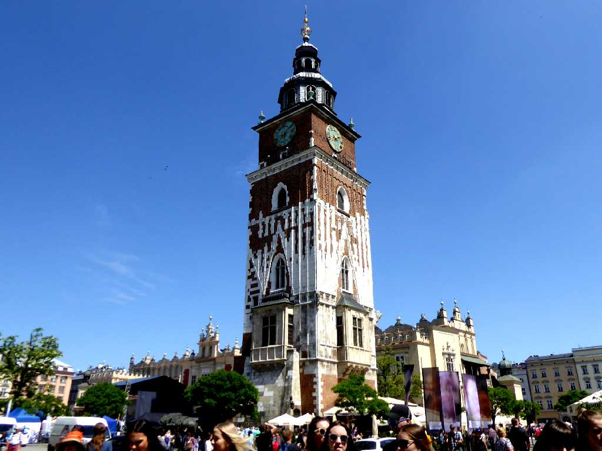
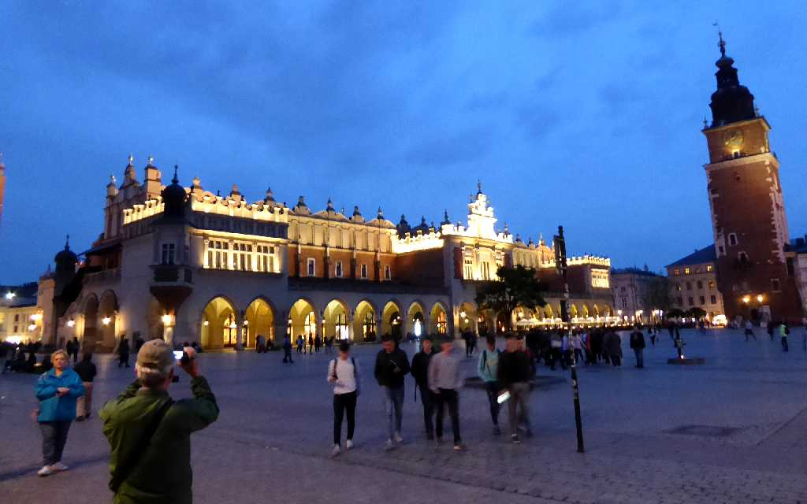
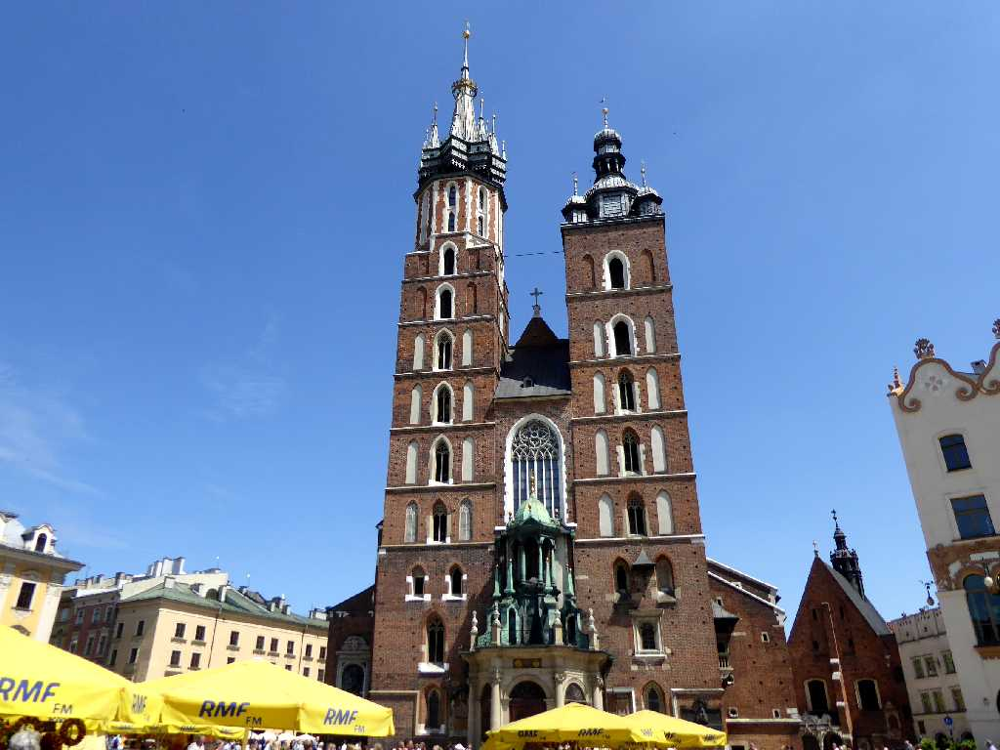
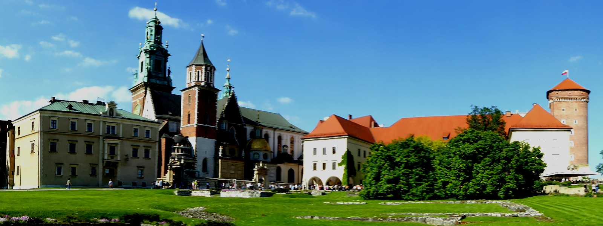
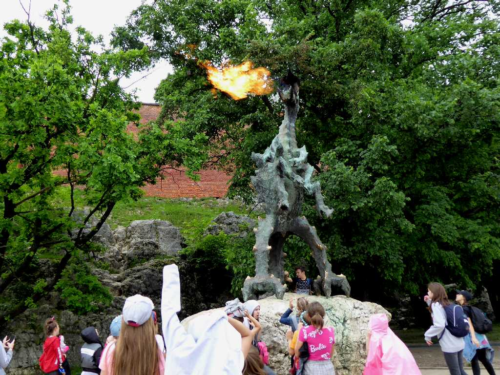
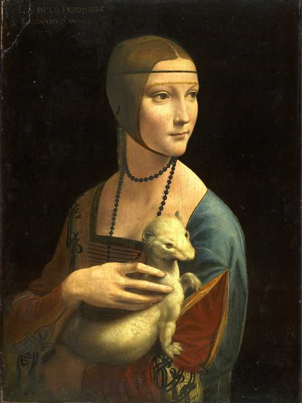
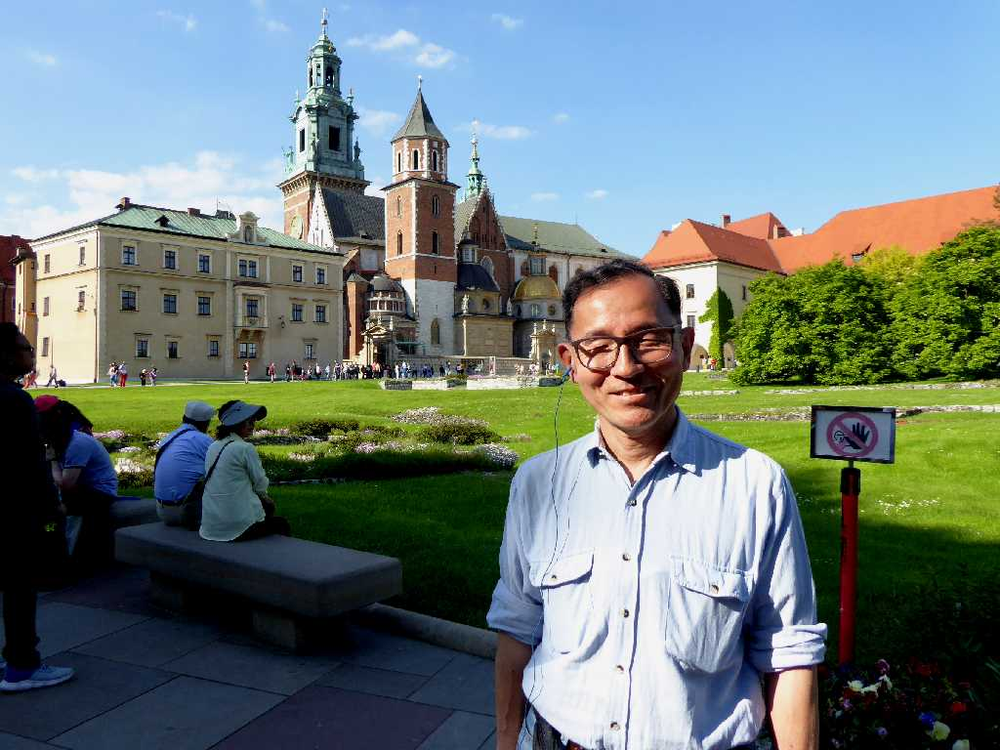

Wieża Ratuszowa Kraków
１６世紀まではポーランド王国の首都として栄えたクラクフの市庁舎塔

Sukiennice Wieża Ratuszowa Rynek Główny Kraków
クラクフの夜の中央市場広場にある織物会館と市庁舎塔

Hejnal Mariacki Kościół Mariacki Kraków
１３世紀に創られたゴシック様式の聖マリア教会は聖マリアのトランペットコールで知られている

Katedra Wawelska Zamek Królewski na Wawelu
ヴァヴェル城は１４世紀から１６世紀まで歴代王の居城として栄えヴァヴェル大聖堂には歴代王の棺が安置されている

Smok Wawelski Kraków
火を噴くヴァヴェルの竜はヴァヴェル城があるヴァヴェルの丘のヴィスワ川の洞窟に住んでいた言い伝えがある

Dama con l'ermellino 1490 Leonardo Da Vinci Muzeum Książąt Czartoryskich Kraków
１８０１年設立のポーランド最古のチャルトリスキ美術館収蔵のレオナルドダヴィンチの白貂を抱く貴婦人

May 31 2019 Kraków